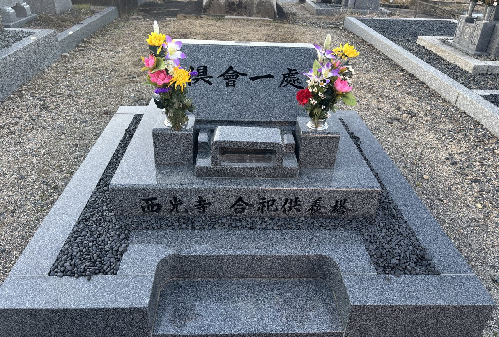

永代供養墓のご案内
お墓を継ぐ方がいなくても、ご安心ください。

倶會一處
く え いっ しょ
三重県鈴鹿市の西光寺には、「倶會一處（くえいっしょ）」と刻まれた供養塔がございます。『仏説阿弥陀経』に説かれる言葉で、浄土に生まれた方々が、ともに同じ処で会うことをあらわしています。
西光寺の永代供養墓は、ほかの方々とともにお納めする合祀の形です。台座には「西光寺 合祀供養塔」と刻んでおります。ひとりで眠るのではなく、ともにあること——それがこのお墓の姿です。
-
年間管理費
なし毎年の費用は一切かかりません。
-
檀家に
ならなくてよい檀家になるかどうかは自由です。ならずにお申し込みいただけます。
-
宗派を
問いませんこれまでの宗旨・宗派にかかわらずお受けいたします。
こんな方へ
- お墓を継ぐ方がいない
- 墓じまいを考えている
- 子や孫に負担をかけたくない
- 元気なうちに決めておきたい
- 遠方に住んでいて今のお墓を守れない
費用
| 檀家以外の方 | 檀家の方 | |
|---|---|---|
| 基本料金（ご遺骨1体を含む） | 15万円 | 10万円 |
| ご遺骨1体追加ごと | +3万円 | +2万円 |
| 年間管理費 | なし | なし |
ご遺骨の数に応じた費用の目安は次のとおりです。
| ご遺骨の数 | 檀家以外の方 | 檀家の方 |
|---|---|---|
| 1体 | 15万円 | 10万円 |
| 2体 | 18万円 | 12万円 |
| 3体 | 21万円 | 14万円 |
※4体以上の場合も同じ計算でお受けいたします。詳しくはお問い合わせください。
※合祀のため、ご納骨後にご遺骨を取り出すことはできません。
永代供養墓について
西光寺の永代供養墓は、他の方のご遺骨とともに合祀（ごうし）する形式です。寺のすぐ隣にある墓地に設けており、いつでも自由にお参りいただけます。
合祀のため区画の空き状況に左右されず、順番をお待ちいただくことはありません。
お申込み前にご確認ください
合祀した後は、ご遺骨を取り出すことができません。将来ほかのお墓へ移す可能性がある場合は、お申込み前にご相談ください。
法要について
永代供養墓にご納骨された方の法要をご希望の場合は、お勤めいたします。年回法要、春季・秋季の永代経法要など、ご希望をお聞かせください。
法要は自動的にお勤めするものではありません。ご希望の際はお問い合わせください。
お申込みの流れ
-
STEP 1
ご相談・お問い合わせ
お電話でご連絡ください。ご不明な点だけのご相談でも構いません。
-
STEP 2
ご見学・ご説明
実際の永代供養墓をご覧いただき、費用やお手続きについてご説明いたします。
-
STEP 3
お申込み
ご納得いただけましたらお申込みいただきます。ご納骨の日時は相談のうえ決めさせていただきます。
-
STEP 4
ご納骨
お決めした日にご納骨いたします。
墓じまいからの改葬をお考えの方へ
現在のお墓からご遺骨を移してお受けすることもできます。お手続きについてもご相談に応じますので、お気軽にお問い合わせください。
よくあるご質問
- 檀家にならないといけませんか？
- いいえ、檀家にならずにお申し込みいただけます。なお、檀家の方は費用が割安になります。
- 宗派は問われますか？
- 問いません。これまでの宗旨・宗派にかかわらずお受けいたします。
- 年間管理費はかかりますか？
- かかりません。毎年の管理費のご負担はございません。
- 生前に申し込めますか？
- お申し込みいただけます。元気なうちに決めておきたいという方も多くいらっしゃいます。
- 今あるお墓を墓じまいして移せますか？
- お受けいたします。お手続きについてもご相談に応じますので、まずはお気軽にお問い合わせください。
- 後からご遺骨を取り出せますか？
- 合祀のため、取り出すことはできません。将来お墓を移す可能性がある場合は、お申込み前にご相談ください。
- お参りはいつでもできますか？
- 寺のすぐ隣にある墓地に設けており、いつでも自由にお参りいただけます。時間の制限や事前のご連絡は必要ありません。
- 法要をお願いできますか？
- ご希望に応じてお勤めいたします。お問い合わせの際にお申し付けください。